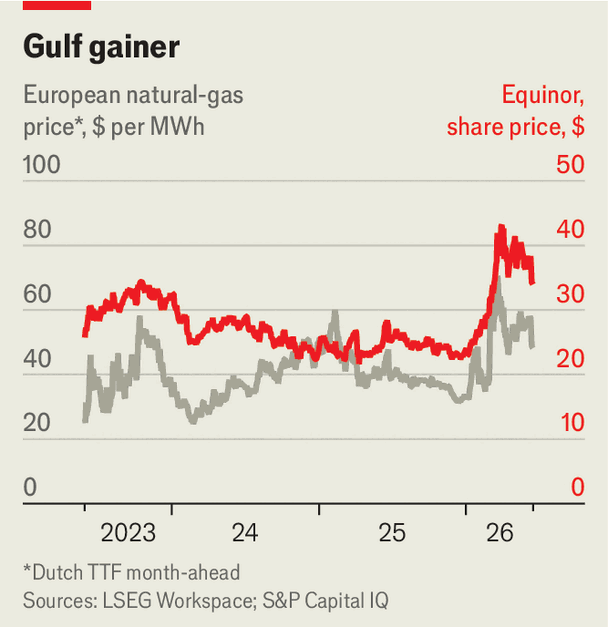

The Iran war has boosted Equinor, Norway’s energy giant
But it cannot turn a greying cash cow into a sprightly upstart
June 18th 2026

RECENT EVENTS have been kind to energy firms outside the Gulf—including Norway’s Equinor, the largest supplier of hydrocarbons to Europe. The closure of the Strait of Hormuz, through which one-fifth of the world’s oil and liquefied natural gas (LNG) usually flows, has pushed European gas prices up by 40% since February; Brent crude averaged $103 a barrel in the three months to May. Equinor’s share price is up by a quarter (see chart).
So you might have expected cheer at Equinor’s capital-markets day on June 16th, the 25th anniversary of the company’s listing in Oslo and New York. Yet Scandinavian restraint prevailed—and not just because peace between Iran and America will calm prices. Equinor remains caught between a greying fossil-fuel business and a green portfolio with clipped ambitions.

Discovered but undeveloped oil and gas on the Norwegian continental shelf, the source of 65% of Equinor’s output, peaked in 1983. Most fields are now mature. To sustain production, in the next few years Equinor intends to deploy 60% of its capital expenditure at home. It will mostly go into small deposits near existing pipelines, wells or plants, to break even within two and a half years and at $35 a barrel or less. Equinor also aims to boost recovery from older fields. It expects Norwegian output to peak in 2027 at 1.4m barrels of oil equivalent per day (boe/d), declining gently to 1.3m boe/d in the early 2030s. But many analysts reckon it may drop faster.
Operations abroad may offset decline at home. Equinor is ramping up Bacalhau, a big Brazilian field under a thick layer of salt; Raia, a similar asset, is expected online by 2028. The firm has also bought assets in America’s Marcellus shale basin.
Equinor expects international production to grow by 30% by 2030, to 950,000 boe/d. But hopes that foreign ventures will transform its fortunes may be misplaced. Alastair Syme of Citigroup doubts that the Norwegian government, Equinor’s largest shareholder, favours global adventurism. The firm is avoiding new countries and frontier exploration, preferring to boost cashflows. It expects $9bn, or 80% more, from international operations by 2030.
Could its future be green? The firm’s renaming (from Statoil) in 2018 signalled a shift that way. Equinor intended renewables to make up 10% of its output by 2030, earmarking $23bn for green investments from 2021 to 2026. But after the pandemic, surging costs for components and supply-chain snags drove projects over budget, just as higher interest rates made financing dearer. Permitting delays and geopolitical uncertainty further squeezed returns. Target markets also grew more slowly than expected. Losses from renewables mounted.
Since 2022 Equinor has scaled back, spending less than $3bn last year. It has quit projects, sold assets and written off $1.4bn. The firm retains three offshore-wind mega-projects, which it expects to be cashflow-positive by next year. It expects its power production to grow fourfold to 20 terawatt-hours by 2030, but mostly from existing projects.
Conscious that this may fail to enthrall investors, Equinor is promising them lots of money. It intends to double share buybacks to $3bn in 2026, and to keep them at $2bn-4bn a year, while raising its dividend by more than 5% a year. The Iran windfall helps for now, but without a lasting bump in prices or new growth, such payouts will soon require borrowing. Equinor is settling down as a middle-aged cash cow. ■
To track the trends shaping commerce, industry and technology, sign up to “The Bottom Line”, our weekly subscriber-only newsletter on global business.